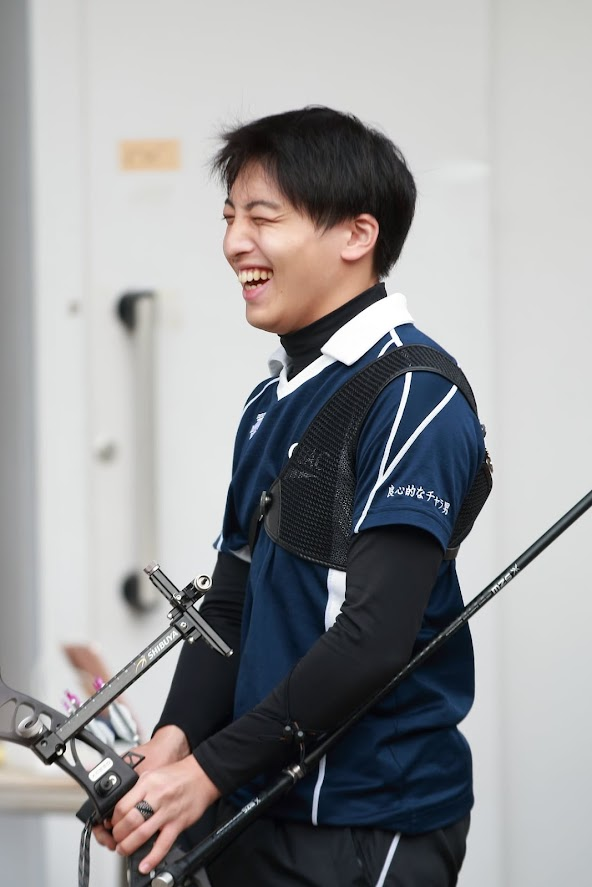

第二弾初回は法学部法学科の齊藤駿忠です。齊藤くんは来年度男子副リーダーを務めます。ノリがよく、男子全体から信頼されています。学業や、バイトとの両立の仕方について話してくれました。
法学科では大人数授業と同時に少人制の演習で法律について深く学ぶことができます。
履修や、テストについては法学科は必修科目のテストが一年の終わりの学期末テストのみなので、学期末テストの時期は大変忙しくなります。そのため、事前にテストに向けてよく準備しておくと少し楽になると思います。
高校からアーチェリーをしていて、その流れで大学でもアーチェリーを続けたいと思いアーチェリー部に入部しました。
学業で課題が忙しいときはなかなから部活にいく時間を確保することが難しいときがありますが、朝早い時間を使って練習したり、講義の空きコマを利用したりすることにより学業と部活を両立してます。
アーチェリー部の魅力は自分の都合によって練習する時間を決められることです。アーチェリー部は一日中射場が開いているため各々が好きな時間に練習することができます。そのため、部活以外の予定がある日でもあいてるいる時間に練習することができます。
また、和気藹々として楽しい雰囲気なのも魅力です。同級生や先輩など、多くの人と繋がりを持つことができます。
アーチェリー部は朝から練習ができるため、バイトのシフトがあっても午前中だけ練習することにより、バイトの時間と部活の時間の両方を取ることができます。そのため、バイトとの両立はしやすいと思います。
オンライン授業では、学科内での交友関係を広げるのが最初は難しかったです。しかし、少人数で行われる講義は対面形式のものも多く、そのような講義を通して交友関係を広げることができます。
入学おめでとうございます。高校とはまったく違う環境である上、コロナウイルスの流行により先行きがまったく見えない中で不安なことがたくさんあると思いますが、新生活を楽しんでいただけたら嬉しいです。
いかがだったでしょうか。このようにアーチェリー部は学業や部活を両立させやすく、自分のペースで練習を行うことができます！次回は理学部生命科学科の岡田直純くんです！